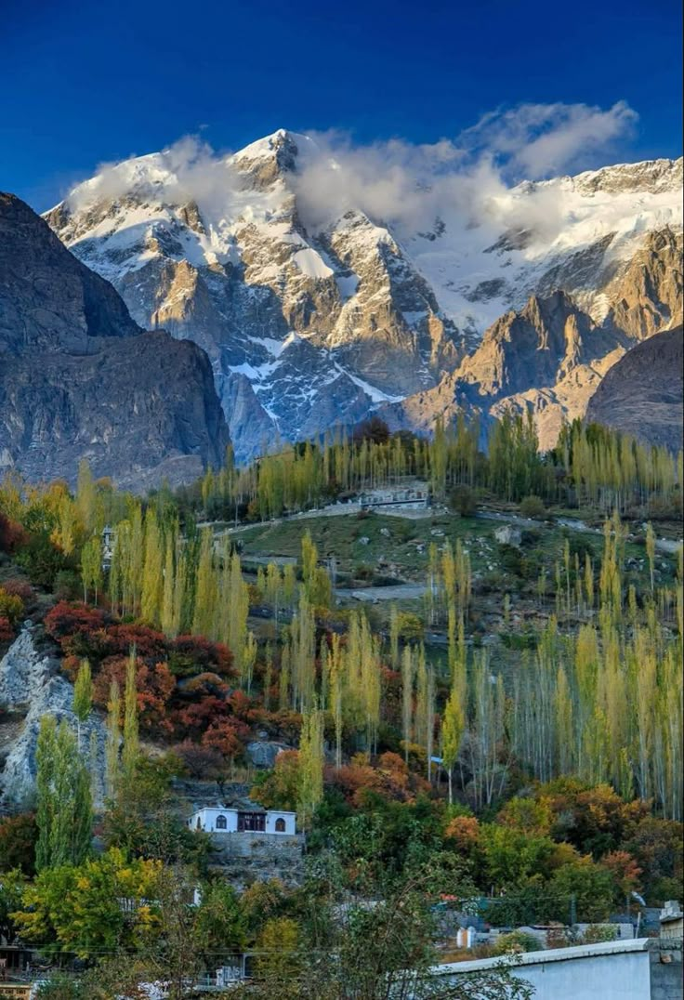
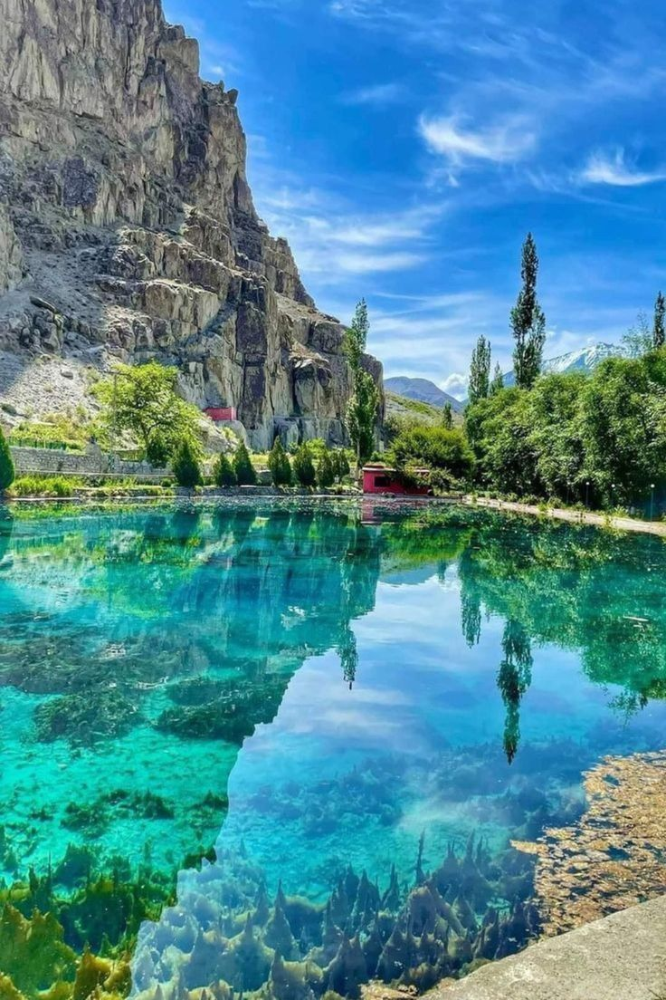
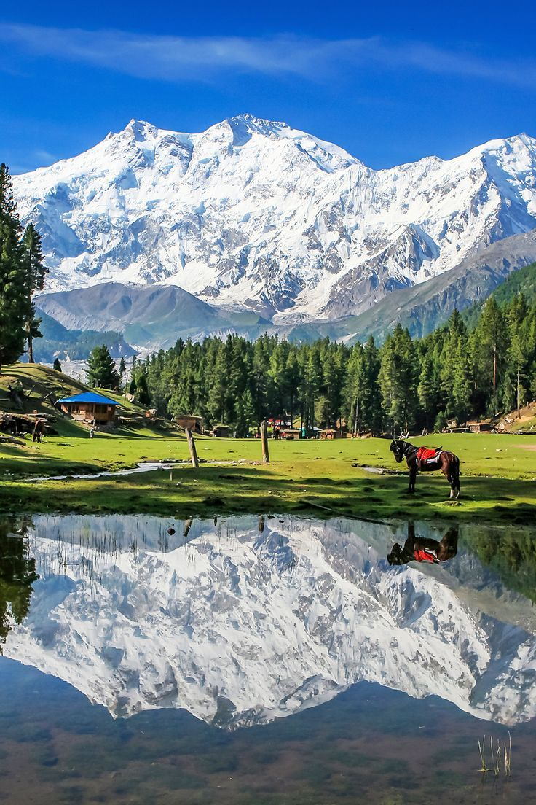
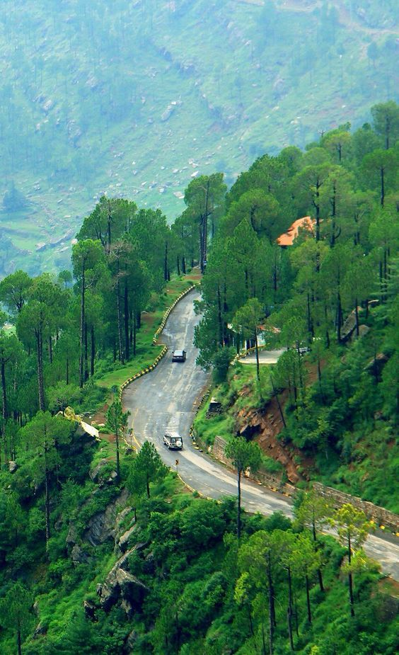

6+
Popular Tourist Destinations

Pakistan is home to magnificent mountains, peaceful valleys, historical landmarks, colorful cultures, and unforgettable travel experiences. Start your journey and discover the natural beauty that makes Pakistan one of the world's most amazing destinations.
Explore DestinationsPakistan is a country rich in history, culture, and breathtaking landscapes. From the snow-covered peaks of the Karakoram Range to the historical architecture of Lahore, every region offers a unique travel experience. This website provides information about popular destinations, travel advice, and useful planning tips for visitors.
Popular Tourist Destinations
Mountain Regions
Historical Attractions
Beautiful Seasons

Famous for stunning lakes, majestic mountains, trekking routes, and adventure tourism.

One of Pakistan's most beautiful camping destinations, offering incredible views of Nanga Parbat.

A popular hill station surrounded by green forests and pleasant weather throughout the year.
Discover unforgettable destinations, explore rich culture, and experience the hospitality of Pakistan.
Contact Us